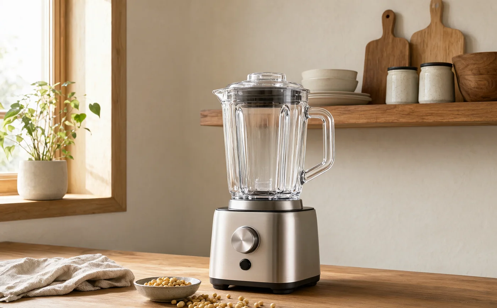

Know Your Machine
先认识你的机器，
再谈配方。
同一份食材，选错模式会差很多：该加热的没加热，该短打的打了三分钟。这页把面板上的十二个键、杯体上的三条线，以及那些不能碰的红线，一次讲清楚。

01 — Modes
面板上的十二个键，分别做什么
预设程序不是“同一个刀片转不同时长”，而是不同的加热曲线、转速和间歇节奏。选对模式，比手动高速打十分钟更细、更安全。
| 模式 | 常见时长 | 适合做什么 | 要点 |
|---|
时间是常见范围，实际受水量、水温、电压和食材量影响。第一次用某个模式，建议按说明书的最小量试一次。
玉米汁 → 米糊或豆浆；浓汤 → 米糊（结束后再调味）；冰沙 → 点动/脉冲分次打；酱料 → 研磨或点动，勤刮壁；植物奶 → 果蔬模式打 1–2 分钟。
02 — Capacity
三条线：冷饮上限、热饮上限、最低水位
热饮沸腾后会膨胀、起泡，所以热饮上限通常低于冷饮上限。超过它，轻则溢锅，重则糊住加热盘、触发保护。低于最低水位，则可能空转、加热不均。
- 冷饮上限果蔬汁、冰沙、植物奶的最高水位。别因为“不加热”就加满。
- 热饮上限豆浆、米糊、玉米汁、浓汤的硬线。沸腾起泡会占空间，超过就容易溢。
- 最低水位低于它，刀片可能空转、加热盘干烧。少量制作请选小杯或减少配方。
- 食材体积干料不要超过杯体 1/3；泡发后的豆类、银耳会继续膨胀。
示意图仅表达相对关系，不代表具体毫升数。以你机器杯体上的刻度为准；没有刻度时，第一次只做半杯。
03 — Routine
一桶豆浆的八个动作
密封圈在位、无裂纹；杯体与底座耦合处干燥；杯盖卡扣完好。
加到目标水位的 60%–80%，再放食材，不容易粘底。
豆类在下、轻的谷物在上；红枣去核；大块切小。
总液体不超过热饮上限；食材不超过杯体 1/3。
听到“咔哒”一声，或确认卡扣到位。没盖严，机器不应启动。
按食材选，不按心情选。硬豆用豆浆，水果用果蔬，冰用冰沙。
结束后等 2–5 分钟，让蒸汽散掉、压力平衡，再开盖。
趁热加温水，点动或清洗模式 30–60 秒，倒掉后再细洗。
不要开盖、不要把手或勺子伸进杯里、不要移动机器、不要频繁按键。机器抖动异常或发出异响时，先断电，再检查食材是否放偏、是否超量。
04 — Safety
八条安全红线
这些不是“注意事项”里的客套话，是真正会伤机器或伤人的操作。
热饮超过热饮上限，沸腾后会从杯口喷出，蒸汽比开水更烫。
没有液体和食材时不要让刀片高速旋转，会损伤密封和轴承。
尤其热饮。等程序结束、蒸汽散开再开，避免烫伤和溢出。
运行中绝对不要用勺子、筷子伸进杯里“帮忙”。
不要把刚沸腾的液体倒进冷玻璃杯；也不要把冷冻硬块直接丢进热杯。
主机底座只可微湿布擦拭；杯底耦合处要擦干再放回。
骨头、整块冰糖、未泡的极硬干货、大块冻肉，先处理再打。
每次间隔 5–10 分钟；手动点动每次不超过 10 秒，防电机过热。
立即断电，不要继续按键，也不要马上开盖。等完全冷却后再检查；无法判断原因时联系售后，不要自行拆机。
05 — Care
清洗：趁热，比用力更重要
破壁机用得越来越少，多半不是坏了，而是洗起来太麻烦。真正省力的做法只有一个：程序结束后立刻洗。
倒出饮品后加温水至 500 ml，点动或清洗模式 30–60 秒，倒掉。大部分残渣已经松动。
用软毛刷或旧牙刷轻刷刀片根部和密封圈缝隙，不要用手抠。
每月一次：500–600 ml 温水 + 1 勺小苏打 + 1 勺柠檬酸，运行米糊/清洗 5 分钟，静置 10 分钟后冲净。
杯体倒置在通风处，密封圈取下单独晾干。完全干燥后再组装，避免异味和霉点。
糊底了怎么办？不要用钢丝球。趁热倒入温水没过糊底，加一勺小苏打浸泡 30 分钟，再用软刷或木铲轻推。顽固的焦层可以加少量白醋，低温加热 5 分钟后再泡。
有异味怎么办？柠檬皮或少量白醋加温水，点动 30 秒后静置 10 分钟；密封圈单独用温水和小苏打搓洗。打完大蒜、洋葱、鱼类后，尽快清洗，别等下一次。
06 — Timer
预约与保温：方便，但别过头
预约的本质是“让食材在水里等一段时间再加热”。冬天问题不大，夏天就要谨慎。
- 6–12 小时为宜。时间太长，豆子泡过头，风味变差，夏天还容易变质。
- 夏季不要把豆子泡在水里预约一整夜。更稳的做法是豆子泡好沥干、放冰箱，早上直接入杯。
- 预约前确认水位和模式。尤其是热饮上限，别因为“还没开始”就加满。
- 保温不是保鲜。程序结束后尽量倒出；长时间 60°C 保温会让豆浆变味、变稠。
- 牛奶、椰浆、糖不要预约。它们更容易变质或糊底，程序结束后再加。
07 — Troubleshooting
几个常见故障，先别急着报修
按了启动，机器没反应
先检查：杯体是否放正、杯盖是否卡到位、电源是否接通、是否处于保护状态。很多机型有“盖子未到位不启动”的联锁。刚做完热饮时，也可能因为温度过高进入保护，等 10–20 分钟再试。
又糊底了
水太少、淀粉太多、糖或牛奶提前加、食材沉底粘住加热盘，是最常见的四个原因。下次先加水再放料，水量不低于配方下限，糖和奶最后加。厚底、高淀粉配方中途可以暂停刮一次底。
沸腾后从杯口溢出来
超过热饮上限，或豆类/燕麦太多导致泡沫堆积。立即断电，等冷却后再清理。下次减少 100–200 ml 水或减少 10–20 g 干料；也可以在程序前加一小滴食用油帮助消泡（不要多）。
打完有很多粗颗粒
豆子没泡透、干料太多、水太少，或者机器转速不足。先补 50–100 ml 温水，再用点动打 20–30 秒。仍然粗，就过滤；豆渣可以摊饼。硬豆和高纤维食材不要期待完全无渣。
机器晃动、噪音特别大
检查台面是否平稳、四脚是否落稳、食材是否放偏、杯体是否卡紧。少量高黏度食材也容易让机器共振。不要用手压机器；断电后重新分布食材，或增加液体。
显示错误代码 / 过热保护
不同品牌代码含义不同，先查说明书。通用处理：断电、冷却 20–30 分钟、检查水位与食材量、清理杯底和耦合处的水渍，再重启。反复出现同一代码，联系售后，不要自行拆机。
杯体有异味，洗了还在
多半在密封圈和刀座缝隙。取下密封圈，用温水加小苏打搓洗，晾干；杯体用柠檬酸或白醋温水浸泡 10 分钟。不要用漂白水，也不要把底座泡水。